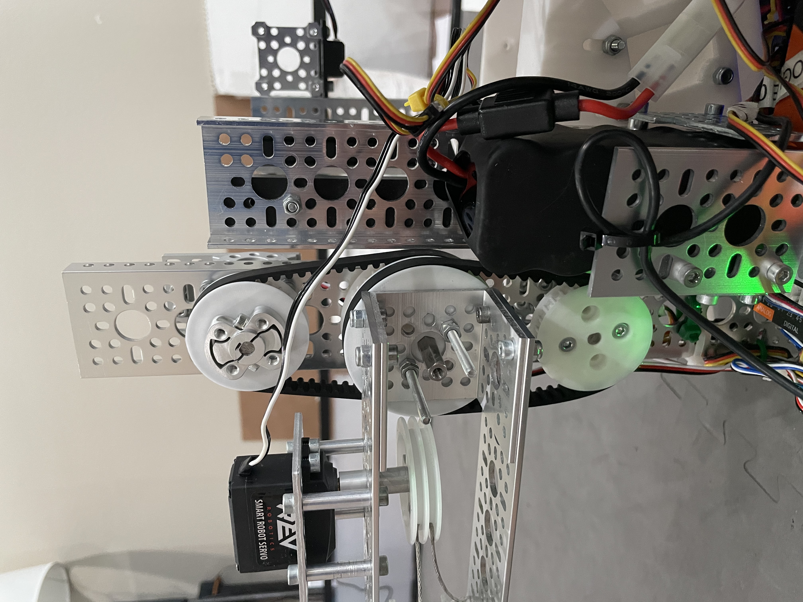

February 2021

Welcome to the meet 3 and meet 4 newsletter! Due to limited changes and a short time span between the two meets, we decided it'd be best to combine the meet 3 and meet 4 newsletter. Even with the combination, this newsletter is still fairly brief. The meet 5 newsletter, however, will feature a full robot redesign so be sure to stay tuned for that!
Meet 3 & 4 Robot Recap
These last two meets have been very different for us in terms of robot development than we've dealt with previously. Instead of redesigning everything as we did for the first two meets, we instead worked on optimizing the pre-existing design to maximize performance and reliability. While that doesn't make the changes to the robot itself overly exciting, the performance gains we saw with more driver practice and minor design changes were huge! We finished meet 4 with a high score of 227 and an average of 192. This average shows more reliability than we've ever had before and we plan for that consistency to stay as we alter the robot in the future. These minimal design changes were made with the intent of understanding the most consistent way to accomplish each task before the meet 5 redesign.
Intake
The Intake had the most visually striking change between meet 3 and 4. We reduced the number of poly belts down to 1 and added a bar to the front to allow us to intake stacks of rings. In addition to those two changes, we geared the bottom roller to mitigate some of the jamming issues we had previously (watch the video below for more details). While this made the intake perform better, it is still fairly unreliable in performing at its best and is the primary focus around the impending meet 5 redesign.
Wobble

The wobble mechanism was redesigned twice between meet 3 and 4 to ensure reliability. The meet 2 design had serious consistency and usability issues that caused us to ditch it entirely. We then moved to the meet 3 design which was mounted on the back of the robot but had to be powered by a motor because it kept burning out servos. The issue with this was that we couldn't set it to a consistent position making it incredibly difficult to use leading to the current meet 4 design. The meet 4 design uses two servos (as pictured) which allows us to set a precise position for the wobble mechanism making it much easier to use. While this does work consistently, the mechanism is fairly unstable and requires a lot of maintenance meaning it will also be redesigned for meet 5.
Transfer

The Transfer has changed the least since meet 2. Although it's had some reliability issues, it's been performing at the level we needed so we never changed it. For meet 5, it will be seeing a pretty drastic redesign to increase both the speed and the reliability as we push for higher scores in future meets. First, we are switching the string on the linear slide to a belt in order to speed up the slides and eliminate the chances of the string coming off or breaking as it has in the past. This is extremely important as, without the transfer, we are incapable of shooting rings. Second, we are switching from the flicker that pushes the rings into the shooter to a linear push mechanism to increase the speed in which we can shoot 3 rings back to back. By pushing the rings into the shooter at a higher velocity, we don't have to wait as long for the wheels to spin back up between each shot motivating us to switch to this faster linear mechanism.
Shooter
Our shooter has been the most consistent module on the robot all season and it continued to perform that way throughout meet 3 and 4. The only major changes made were to the angle of the shooter and the guide to allow us to shoot more consistently from closer to the goal. In the match videos, you'll notice we shoot from the white line on the field rather than further back as we have previously which saves us a lot of time throughout a match. For meet 5, we are redesigning the shooter to only have one wheel instead of two. We've discovered that using two wheels doesn't present any advantages and it puts more stress on the motors because there are two wheels instead of one. In search of more speed as mentioned before, we believe it will allow for less of a pause between shots due to more motor power on the one wheel instead of distributed across two. The fundamentals of the shooter, however, are staying the same and it will visually appear similar to the original.
Robot Summary
That's all for meet 3 and 4 when it comes to robot! The changes made were simple and added performance. We've learned a lot along the way about how we can optimize something without having to redesign it. This design practice will continue to improve throughout the rest of the season and should help us make our designs perform better while using fewer resources. To the left is a video we made summarizing all the meet 4 changes for both the robot and the autonomous program. If you want a more detailed look into the design changes I described, feel free to take a look!
Match Video
Here is the best match from the last two meets where we scored 227 points! This was a 100 point gain from meet 2 and we are very happy with how reliable the robot has become with scoring this high as well. If there's anything mentioned above or in the video that you have questions about we recommend reading our previous newsletters and if you have any further questions feel free to contact us!
Summary

We kept this newsletter shorter and more concise than the previous due to feedback preferring less specific hardware details. If there's anything you'd like to hear about in more detail, be sure to reach out to us and we'd be more than happy to discuss it with you. As far as outreach is concerned, the same efforts are still going with the SendCutSend videos being published in the next month and FIRST Flight Crew, our mentor discussion/interview videos, being off the ground hopefully in the next month as well. We also have a couple of live streams coming up with other teams so be sure to be on the lookout for those!
Here is the full summary:
-
Full meet 5 robot redesign
-
Intake - worked well in past meets but has room for improvement in terms of speed and consistency in performance
-
Wobble Goal - being redesigned for better implementation and ease of use for our drivers
-
Shooter - new design using a single wheel to decrease the amount of time between shots
-
Transfer - belt drive linear slides for increased speed and reliability in addition to a linear push mechanism to push rings into the shooter at a higher velocity
-
We officially have a freshman drive team that is practicing in spare meeting time in preparation for next year
-
Outreach projects are on track to be done in the near future and we are looking for more in the future
-
We are looking for new members! If you know any students 7th grade and up who would be a good candidate for the team and live locally, be sure to let us know!